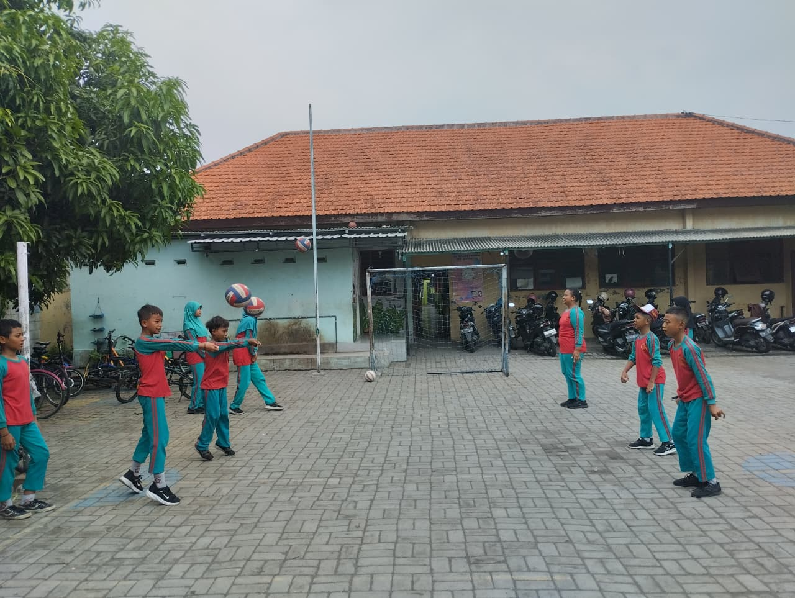

Kegiatan Ekstrakurikuler
Asah kemampuan non-akademik melalui berbagai pilihan klub.

Bola Voli
Melatih fisik, ketangkasan, dan kerjasama tim yang solid.
Setiap Sabtu
Seni Banjari
Mendalami seni musik islami dan rebana.
Setiap JumatRuang Prestasi
Kumpulan kebanggaan siswa-siswi kami di tingkat daerah maupun nasional.

Akademik
Juara 1 Olimpiade Matematika
Meraih medali emas tingkat provinsi Jawa Timur 2025.